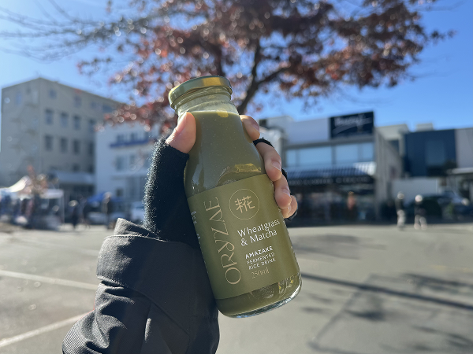
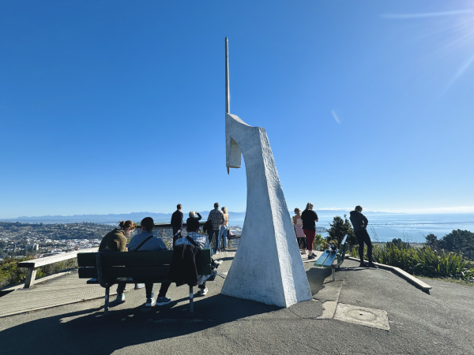
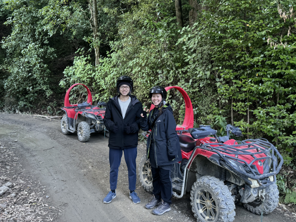
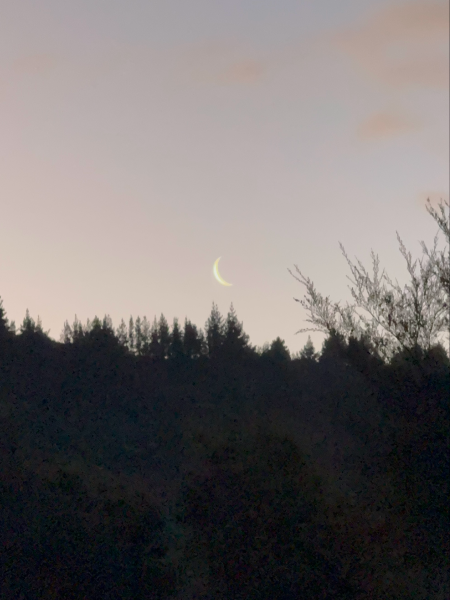
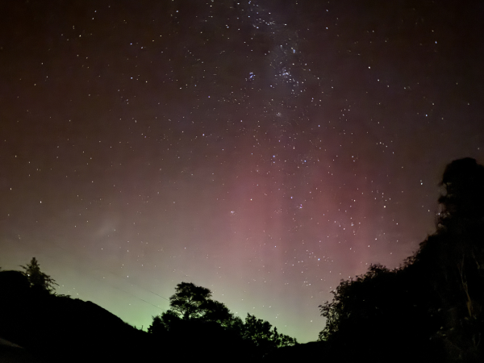
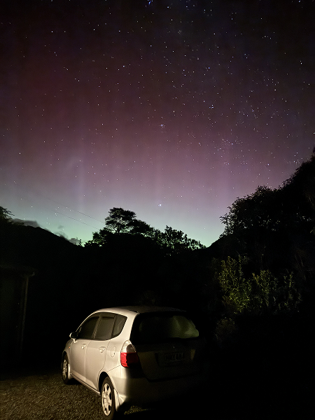
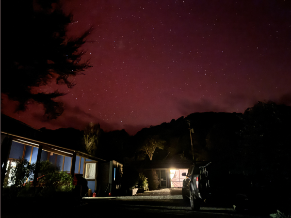

Sat, 11 May 2024
0.5°C - 13°C







A Jampacked Day
Went to the Nelson Market in the morning, Centre of New Zealand in the afternoon, and Cable Bay Adventure Park for quadbiking and the skywire! Also spotted the aurora tonight 🥹🌌